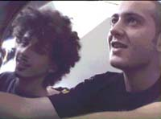

In questa pagina troverete una raccolta di immagini realizzate con una telecamera "artigianale" collegata al Pc.
I soggetti ripresi in queste foto sono il prodotto di un esperimento
di mutazioni genetiche, nome in codice sklero, condotto su un campione di circa 20 persone (lo staff)
durante lo svolgimento del TiG'98 ossia 4 giorni senza nessun tipo di riposo, con sollecitazioni
acustiche ininterrotte e con un altissimo tasso di radiazioni elettromagnetiche :))
Lo staff del TiG'98 quasi al completo! (ancora in buone condizioni)
(C) Dino Fracchia
Franko21 e Zok alle prese con il server Linux
Filtro, Jaromil e Xenon (primi cenni di sklero)
Horobi impegnato con la sua Amiga 4000
Flitro in Irc (soggetto affetto da chat-dipendenza)
Metal Designer (in versione zombie)
Xenon e NhAiMA

Jaromil e Rubik (meraviglie di Linux?)
Xenon, O2 e merc (tipico sintomo da sklero,
paralisi facciale di merc...)
Maxime e Horobi (Maxime si autoelegge sindaco del party)
Jaromil in versione originale
NhAiMA eletta miss TiG'98
Rubik vs sklero (in versione zombie)
Maxime affetto da sklero
(altro tipico sintomo, perdita dei sensi)
Metal Designer in versione notte
(con la busta dei rifiuti ben in vista)
cerin0 e Jaromil in versione giorno
(altro sintomo da sklero, perdita cognizione temporale)
Lo sklero dilaga!!!
Inizio mutazioni genetiche dello sklero!
Cliff soggetto mutato geneticamente!
Probabilmente in futuro riusciremo ad ampliare la casistica del fenomeno sklero
con altre foto riprese durante il party. Noi dello staff siamo ancora in fase di
convalescienza...e non sappiamo se con il passare del tempo torneremo nei limiti della normalità.
Lo staff del TiG'98 (in ordine sparso): Maxime, franko21, Rubik, cerin0, Horobi, Fra, Metal Designer, Pivy, Jaromil, Xenon, O2, Cliff,
NhAiMA, Zok, Xenon, smilzo, Filtro, merc, Clare, DjB, Nezmar.
Un ringraziamento speciale a: Mitia, Michele, Fabrizio, Paolo, Groucho, Ossian, KillGates, Mod3m, Neuro, Cyberlaw, Alessia,
lamer, AhPook, Alessandro, Black3y3, Jean Marc, Frank, Nah Kolor, Metro Olografix Association,
Arci Nuova Associazione e a tutti coloro che hanno partecipato al TiG'98!